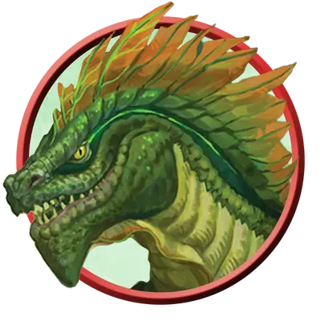

Верховный людоящер
Lizardfolk Sovereign
Средний Элементаль, Нейтральный

Класс Защиты 15 Инициатива +1 (11)
Хиты 78 (12к8 + 24)
Скорость 30 футов, Плавания 30 футов, Копания 20 футов
| мод | спас | ||
|---|---|---|---|
| СИЛ | 17 | +3 | +3 |
| ЛОВ | 12 | +1 | +1 |
| ТЕЛ | 15 | +2 | +4 |
| мод | спас | ||
|---|---|---|---|
| ИНТ | 11 | +0 | +0 |
| МДР | 11 | +0 | +2 |
| ХАР | 15 | +2 | +2 |
Иммунитеты Испуганный
Чувства Тёмное зрение 60 футов, пассивное Восприятие 14
Языки Драконий, Первичный (Терран)
Опасность 4 (1 100 опыта; БВ +2)
Действия
Мультиатака. Людоящер совершает одну атаку Укусом и одну атаку Земляным молотом.
Укус. Бросок рукопашной атаки: +5, досягаемость 5 фт. Попадание: 8 (1к10 + 3) Колющего урона. Если цель — существо, кроме Конструктов и Нежити, то людоящер получает Временные хиты, равные нанесённому урону.
Земляной молот. Бросок рукопашной атаки: +5, досягаемость 5 фт. Попадание: 10 (2к6 + 3) Дробящего урона. Если цель — существо Среднего размера или меньше, она становится Опрокинутой.
Бонусные действия
Налёт. Людоящер перемещается по прямой на расстояние вплоть до значения его Скорости или Скорости плавания к видимой ему цели.
Бонус мастерства +2
Среда обитания Болота, Леса
Сокровища Личные
Людоящеры
Защищающие свои земли рептилии
Людоящеры обитают в дикой местности, наполненной первозданной магией. Хотя большинство людоящеров обладают различными навыками и считаются Гуманоидами, некоторые из них вступают в могущественный союз со Стихийным планом Земли и обретают магическую связь с циклом роста и перерождения.
Верховные людоящеры проходят магические ритуалы, которые наделяют их невообразимой силой и магией Стихийного плана Земли, но также могут и пробудить в них первобытную жестокость.